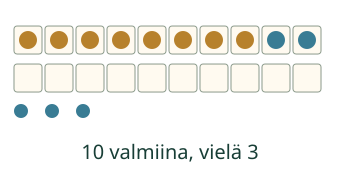
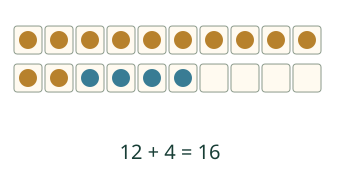

Aavan 8 simpukkaa ja Loikan 5. Miten saat ne yhteen?
Miksi kymppi auttaa?
Kahdeksaan tarvitaan kaksi

Kun kymppi on jo mukana

Myös 5 + 8 on 13. Voit vaihtaa laskettavien järjestyksen, käyttää tuttua lukuhajotelmaa tai laskea suoraan. Kympin kautta kulkeminen on yksi auttava tapa, ei pakollinen klikkausreitti.
Ennusta: saako nyt lisätä koko viitosen kymppiin?
Katso perustelu
Ei. Kaksi viidestä on jo mukana. Muuten ne laskettaisiin kahdesti.
Kokeile itse
Voit vastata suoraan. Vaihda lukuja vasta, kun haluat uuden laskun.
Uusi tilanne: kirjat hyllyssä
Hyllyssä on 9 kirjaa. Saat 6 lisää. Yksi täyttää kympin ja viisi jää: 9 + 1 + 5 = 15. Yhteensä on 15 kirjaa, vaikka kirjat eivät olisi ruudukossa.
Lisää tutkittavaa
Kokeile 0 + 13, 10 + 0, 7 + 3 ja 9 + 9. Milloin kymppi ylittyy, täyttyy juuri tai on jo valmiina? Nollan lisääminen ei kasvata määrää.
Lopuksi: miten jakaisit luvun 4, jos lasket 9 + 4? Voit myös näyttää saman summan toisella oikealla tavalla.
Opettajalle ja ilman ruutua
Luokat 1–2. Vaadittu esitieto M-ADD-FACT-01. Lukualue ja summat 0–20, 231 järjestettyä paria. Näytä kaksi kymmenen ruudukkoa paperilla ja siirrä todellinen osa lisättävästä määrästä; ryhmittely ei lisää uusia esineitä. Molemmat laskettavat voivat olla 0, 10 tai yli 10, jos summa mahtuu alueeseen.
Hajotelmatehtävä tarkistaa pidetyn luvun ja toisen luvun kahden osan yhteyden sekä summan. Kumman tahansa laskettavan hajottaminen, osien vaihto, nollaosat ja muut oikeat kuin kymppihajotelmat hyväksytään. Pelkkä suora numerovastaus ei osoita hajottamisen rakentamista, tiettyä strategiaa, itsenäistä sujuvuutta tai muistamista. Malli ja vihjeet ovat apua; ei hallintapäätöstä, aikarajaa tai oppilashistoriaa.